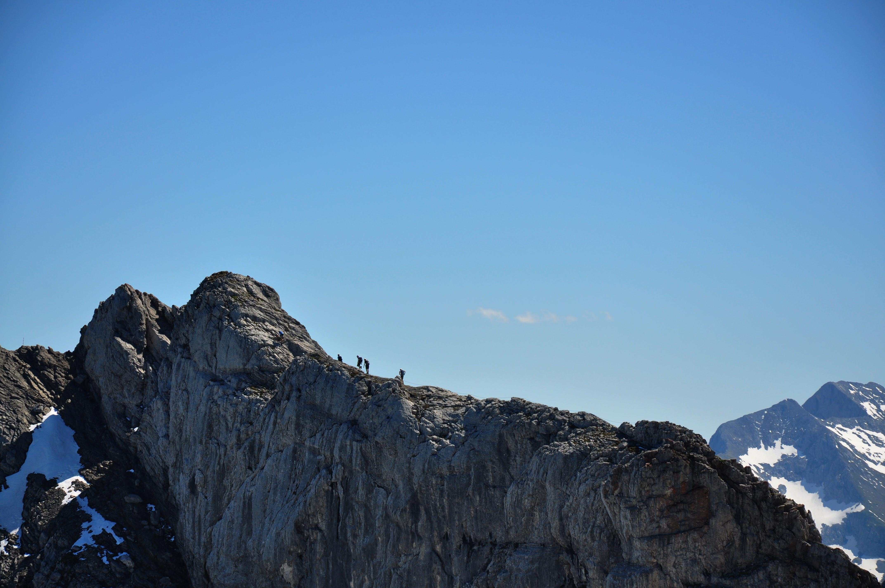

[转寄/推荐][转贴][删除][修改][设置可RE属性][上一篇][返回讨论区][下一篇][回文章][同主题列表][同主题阅读][从这里展开]
发信人: liyiren (liyiren), 信区: outdoor
标 题: 初登阿尔卑斯
发信站: 饮水思源 (2012年06月18日16:37:41 星期一)
懒得写游记了，看看图好啦。图片也懒得改分辨率了，对不起各位的浏览器。
大概爬了10多个小时，基本上都是走边境山脊线，一路都走在山脊上，左手奥地利右手德
国。最后下了近2000米的海拔回到火车站。
 screen.width - 200){this.width = screen.width - 200}">
|

[转寄/推荐][转贴][删除][修改][设置可RE属性][上一篇][返回讨论区][下一篇][回文章][同主题列表][同主题阅读][从这里展开]